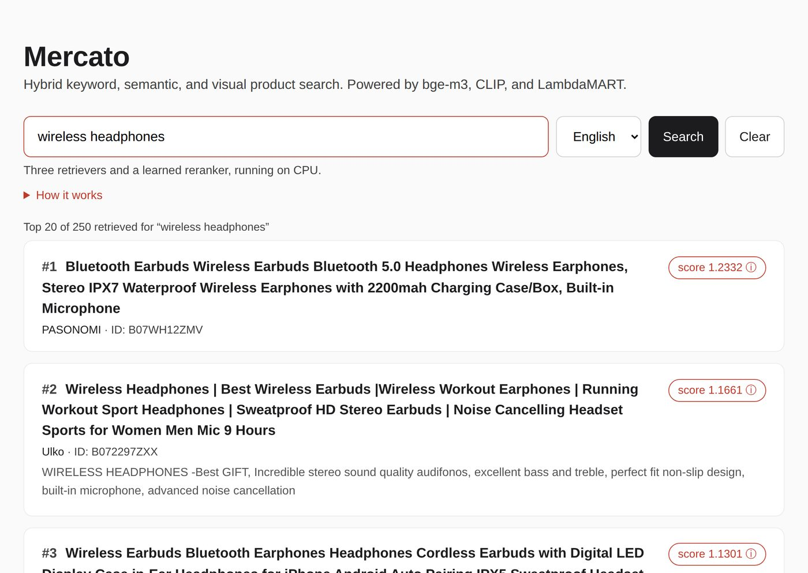
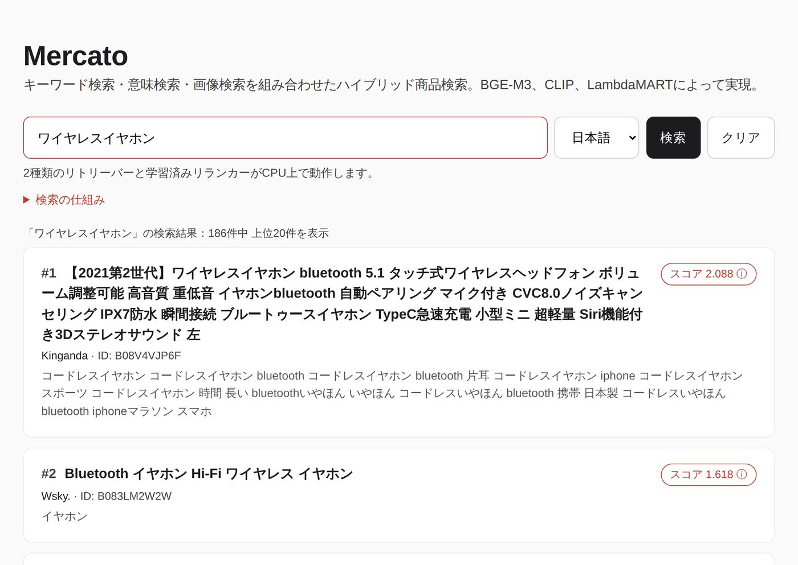

Mercato
A multilingual product search engine, dataset to deployment

Searching a marketplace in more than one language
A marketplace that operates in two countries has a choice to make about search. The straightforward option is to run one stack per language: an English index with an English analyser and an English model, and a separate Japanese one beside it. It works, and it doubles the number of things you maintain. Every improvement has to be made twice, every regression can appear in one language and not the other, and the two systems drift apart over time.
The alternative is a single embedding model that already covers both languages, with only the
locale-specific parts kept separate. That is what Mercato does. The dense retriever is
bge-m3, which is trained across more than a hundred languages, so English and
Japanese text land in the same vector space without any per-language modelling work. What
stays separate is the part that genuinely differs: the keyword tokenizer, the judgments used
for evaluation, and the ranking model trained on them.
That is worth being precise about, because it is easy to overstate. Mercato is a multilingual retrieval architecture that is currently demonstrated across English and Japanese. Two locales are live. Adding a third does not require a new model — it requires that locale's tokenizer and a set of judgments to train and evaluate against.
The dataset, and the honest limits of it
The evaluation runs on the Amazon Shopping Queries Dataset (ESCI), which pairs real search queries with real products and a human relevance label per pair: Exact, Substitute, Complement, or Irrelevant. Two properties make it the right choice here. It covers US and Japanese locales, which is the whole point of the exercise. And its labels are graded rather than binary, which means NDCG measures something real — getting an Exact match above a Substitute is rewarded, rather than both counting equally as a hit.
Product images come from SQID, a community extension that publishes precomputed CLIP vectors for ESCI products rather than the images themselves, which keeps it distributable. Both datasets have limits worth stating plainly:
- SQID covers US products only. There is no equivalent Japanese image coverage in any public dataset. This is the single biggest asymmetry in the system and it propagates everywhere downstream.
- Roughly 5% of SQID's image vectors are malformed — wrong dimensionality rather than missing. They have to be detected and dropped rather than trusted, because a wrongly shaped vector fails late and confusingly rather than at load time.
- Product text is not uniformly short. Title, brand, and description together are long enough that truncation length is a real decision, not a formality.
None of this is a reason to pick a different dataset. There is no public alternative with graded judgments across both an English and a Japanese locale. It is a reason to say what the numbers do and do not cover.
Evaluation scope, and a deliberate asymmetry
Everything below runs on complete benchmark splits. Nothing is sampled down to make it finish faster.
| Locale | Queries | Products | Judgments | Retrieval channels |
|---|---|---|---|---|
| English (US) | 8,956 | 164,900 | 181,701 | Keyword, dense, image |
| Japanese | 10,407 | 233,850 | 297,883 | Keyword, dense |
The judgments are sparse, and that shapes how everything is measured. Each English query is judged against roughly 20 products on average, not against all 164,900; the Japanese figure is about 29. So there are two distinct bases for measuring, and mixing them produces nonsense:
- Full-corpus retrieval asks a retriever to find the right products among every product in the index. Scores here are low in absolute terms, because the task is genuinely hard.
- Judged-candidate reranking asks a model to order a pool where the relevant items are already present. Scores here are high, because finding is no longer part of the job.
An NDCG@10 of 0.48 on the first basis and 0.86 on the second are not in competition. They answer different questions, and every number below is labelled with which one it belongs to.
Architecture
A query fans out to the retrievers in parallel, each returning its own ranked list. Reciprocal Rank Fusion merges those lists into one candidate pool, and a LambdaMART model trained for that locale reorders the pool. The top 20 are returned.
Rank fusion rather than score fusion is a deliberate choice. BM25 scores and cosine similarities are not on a shared scale and there is no principled conversion between them. RRF sidesteps that entirely by discarding the scores and combining positions, which means a retriever cannot dominate the merge just because its numbers happen to be larger.
What each retriever contributes
Measured on the full-corpus basis for English, where the retriever has to find relevant products among all 164,900:
Two things stand out. First, BM25 and dense retrieval score almost the same on their own (0.4019 against 0.3898), but fusing them reaches 0.4545 — they are finding different products, not the same products in a different order. Exact keyword matching handles brand names, model numbers, and part codes, which embeddings routinely blur together; embeddings handle paraphrase and intent, which keyword matching misses completely.
Second, the image channel earns its place despite being the weakest retriever in isolation. Going from two-way to three-way fusion moves NDCG@10 from 0.4545 to 0.4821, a larger gain than anything else in the table. A shopper searching for a physical object often means something visual that the title does not spell out, and image similarity catches products whose text is unhelpful — badly written listings, sparse descriptions, keyword-stuffed titles.
Japanese dense retrieval on the same basis reaches NDCG@10 0.3918, MRR 0.6142, and Recall@100 0.4650 — close to the English dense figure, which is what you would hope for from a single multilingual model doing the same job in both languages.
The learned reranker
Fusion produces a good candidate pool but it does not know anything about the query. A LambdaMART model, trained with LightGBM and tuned with Optuna, reorders that pool using ten features for English and eight for Japanese. The two missing Japanese features are the image ones, for the reason established above.
Two decisions matter more than the feature list:
Grouping by query. The model is trained with a group parameter that tells it which rows belong to the same query. As a result it learns relative ordering within a query rather than an absolute relevance score. That is what ranking actually needs. An absolute scorer would waste capacity learning that some queries are generally easier than others, which tells you nothing about which product should sit at position one.
Splitting by query, not by row. Cross-validation folds are drawn at query level. Splitting rows at random would put some products from a query in training and the rest in validation, and the model would score its own training queries at evaluation time. The numbers would look excellent and mean nothing.
| Locale | Fusion NDCG@10 | After reranking | Gain | Features |
|---|---|---|---|---|
| English | 0.8262 | 0.8581 | +0.0319 | 10 |
| Japanese | 0.8194 | 0.8315 | +0.0121 | 8 |
These are judged-candidate, out-of-fold figures. The pool already contains the relevant items; the reranker's job is only to order them.
Significance testing
A gain of +0.0319 is small enough that it is fair to ask whether it is real or noise. A Wilcoxon signed-rank test across all 8,956 English queries returns p = 1.5 × 10⁻²¹⁰.
That number is not a claim that the improvement is large. It is a claim that it is consistent: the reranker helps on nearly every query rather than helping enormously on a few and hurting elsewhere. For a production ranker that consistency is the property you want, because an average gain built from wild per-query swings is a worse user experience than a small reliable one, even at identical mean NDCG.
What did not work
Performance is not evenly distributed across queries. Bucketing English queries by how many judgments they carry shows a clear gradient: weighted fusion reaches NDCG@10 0.5148 on richly judged queries and falls to 0.4131 on the sparsest bucket.
The obvious lever is query expansion — add related terms to a sparse query so it matches more documents. I implemented pseudo-relevance feedback, then an RM3-inspired interpolation, and measured both against the baseline.
Both made things worse where it counted. Recall went up, which is what expansion is supposed to do, and precision at the top of the ranking went down by more. Adding terms to a query drifts it away from what the user asked for, and on the sparsest queries — where there is least signal to anchor the expansion — the drift is worst. After reranking, the RM3-inspired variant and classic PRF landed close to identical, and the overall effect was a small win that was neutral on long-tail top-rank performance.
That is a negative result and it stays in the write-up. The diagnosis is that the long tail here is a recall problem caused by thin judgments, not a ranking problem that reordering can fix. Query expansion is the wrong lever, applied correctly. Knowing which lever is wrong is worth more than a table where everything improved.
Deployment
The service runs on CPU only, on free tiers, in two places. There is no GPU anywhere in the serving path.
Two engineering decisions carried most of the weight here.
Approximate nearest neighbour search. Swapping the exact FAISS index for an HNSW graph took median query time from 132.2 ms to 0.31 ms, roughly 400 times faster, and returned identical top-10 results on the queries sampled to check it. On a two-core CPU instance that difference is what separates a service that feels responsive from one that does not.
Baking artifacts into the image. Indexes, embeddings, and models are built into the container rather than fetched at boot. It makes the image large, but a cold start that has to download several gigabytes before it can answer will not survive a platform's startup timeout. Both free tiers scale to zero, so cold starts are a fact of life and the frontend is written to show a warming state rather than a blank page.

Locale is an explicit parameter, not an inference. Automatic language detection on short queries is unreliable — a Japanese shopper searching for a romanised brand name would be routed to the wrong index — and a wrong guess is a worse failure than asking the user to pick.
What comes next
The clearest gaps, in the order I would address them:
- Japanese keyword tokenization is whitespace-based, not morphological. Japanese does not delimit words with spaces, so splitting on whitespace is crude. A morphological analyser such as MeCab, fugashi, or Sudachi is the correct tool. It is consistent between training and serving, so it is not producing wrong results — it is leaving quality on the table.
- Normalization handles surface variation, not meaning. NFKC plus lowercasing unifies character widths and capitalisation. It does nothing for romanised spellings, brand synonyms, or typos. Synonym dictionaries cover the first two; approximate matching over retrieved candidates, with a library such as rapidfuzz, covers the third.
- Japanese image coverage. The missing third channel and the two missing ranking features both trace back to one gap in the public data. That is what the ESCI-JP project is for.
- Richer product text. Bullet points and colour are currently dropped from the embedded text. Adding them means re-embedding the corpus, which is a known cost with a documented procedure rather than an open question.
Both deployments scale to zero, so the first request after a quiet period takes a while to answer.